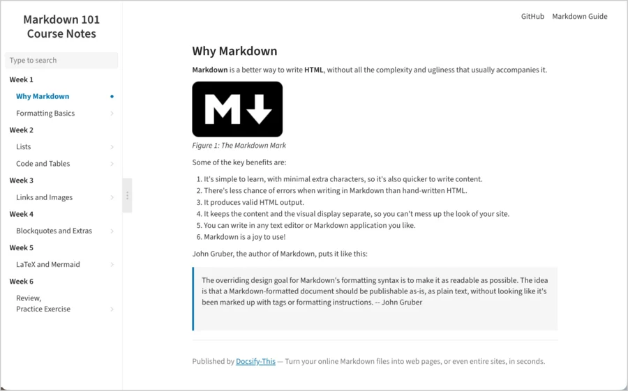
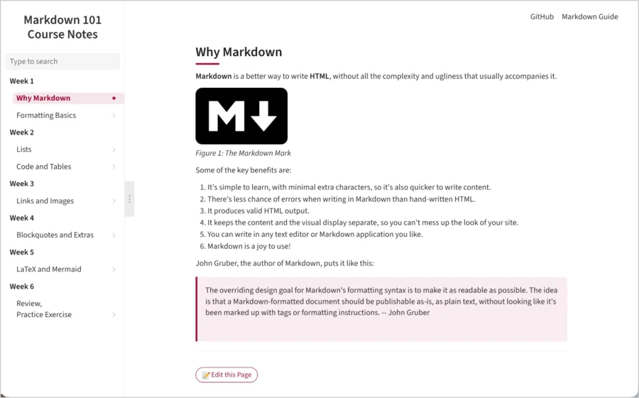

Creating GitHub Course Notes for Docsify‑This
A few simple structural choices – whether you're starting fresh or adjusting notes you already have – create a repository students can navigate easily, on GitHub or with Docsify-This alike.
Keep it flat when you can
A flat repository – one Markdown file per topic, with no subfolders – needs no special configuration at all. Paste any file's URL into Docsify-This and it just works. Folders are fine too, once a course grows past a single page per week – just turn on Links Within a Site, as described in the student guide's "If page links are not working" section, so links between files keep working.
Avoid numbered headings
Keep headings from starting with a digit – write "Week 1" or "Unit One", not "1. Week 1". Numbered headings are common in course notes, but Docsify can't reliably jump to them: a heading whose id starts with a number breaks link-based navigation to that heading, and there's no setting that fixes it.
Skip table-of-contents generator tools
Tools like DocToc are built for reading directly on GitHub, and generate links that match GitHub's own heading-id rules – which don't always match the ids Docsify-This generates for those same headings. Docsify-This already builds a real, working table of contents for every page automatically, with no extra tool required.
Let your README do double duty
A short README with a simple schedule or index table works as both your repository's front page on GitHub or Codeberg and the homepage Docsify-This publishes – one file, two audiences. See a working example that follows every guideline on this page: the repository on GitHub or Codeberg, or the same content displayed with Docsify-This from GitHub or displayed with Docsify-This from Codeberg.
Level up further
Once a course grows past a single-page outline, there are two ways to level up. Stay with Docsify-This and add a _sidebar.md file listing your pages for real site-wide navigation, and a _navbar.md for a top navigation bar. Set a site name too – under Website name displayed in Sidebar (Advanced Web Page Builder Options) – so the sidebar and browser tab clearly show your course name, and search then covers every page the sidebar lists, not just the one a student happens to be on. See a live Docsify-This example of all this in action, built from the same Markdown course notes repo files.
Or move to a fully custom-styled, deployed site of your own – with your own URL, and no restructuring needed. The Docsify Open Course Starter Kit takes the same kind of flat Markdown repo and turns it into a deployed, brandable course site. See a live Docsify Open Course Starter Kit example built from the same Markdown course notes repo files.


A real course example, with no changes made
Not every course repo that works well with Docsify-This was built with this guide in mind – CMPT 383, Fall 2026, taught by Toby Donaldson (School of Computing Science, Simon Fraser University), already follows the same principles: organized into folders by topic, with no numbered headings and no special setup beyond &relative-paths=true. See it displayed with Docsify-This.
Questions?
See Docsify‑This for the main project page, the student guide for the reading side of this, or get in touch.